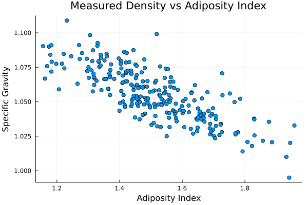
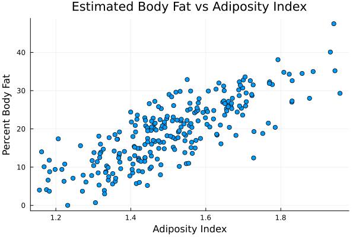
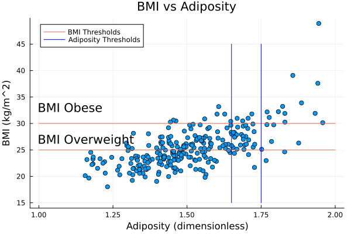
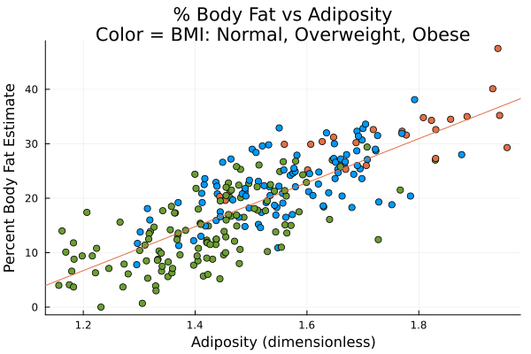
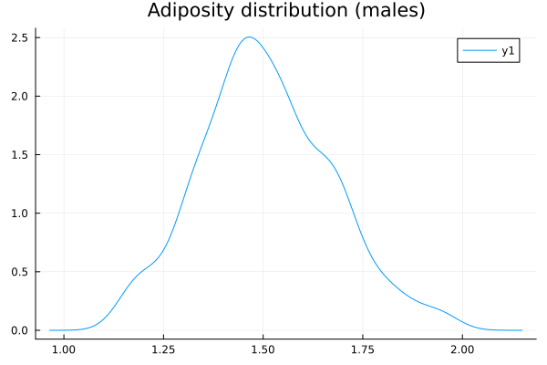

using CSV,StatsPlots,DataFrames,DataFramesMeta,StatsBase,GLM
dat = CSV.read("bodyfat.csv",DataFrame; header=2)
kgperlb = 0.45359237 # this ultimately incorporates conversion between lbf of weight and kg of mass
cmperin = 2.54
densmeat = 1000.0 #kg/m^3 (about, this is density of water which is going to be close)
dat.adiposity = densmeat ./ (dat.weightlbs * kgperlb ./ (pi .* (dat.heightinch .* cmperin ./ 100.0).*((dat.abdomcm ./ 100.0) ./ (2.0*pi)).^2))
# one 44 year old guy has reported weight of 205 lbs and height of 29.5 inches
# clearly a measurement error in height, or he has no legs or something unusual
# eliminating him
dat = @subset(dat, :heightinch .> 30.0)
dat.bmi = @df dat identity((:weightlbs .* kgperlb) ./ (:heightinch .* cmperin ./ 100.0).^2)
p = @df dat scatter(:adiposity, :specgrav; title="Measured Density vs Adiposity Index", xlab="Adiposity Index",ylab="Specific Gravity", legend=false)
display(p)
p = @df dat scatter(:adiposity, :pctfat; title="Estimated Body Fat vs Adiposity Index", xlab="Adiposity Index",ylab="Percent Body Fat", legend=false)
display(p)
## compare adiposity to BMI
p = @df dat scatter(:adiposity, :bmi;
title="BMI vs Adiposity",xlab="Adiposity (dimensionless)", ylab="BMI (kg/m^2)",label=false,legend=:topleft)
plot!([1.0,2.0,missing,1.0,2.0],[30.0,30.0,missing,25.0,25.0]; label="BMI Thresholds")
plot!([1.75,1.75,missing,1.65,1.65],[15.0,45.0,missing,15.0,45.0]; color = "blue", label="Adiposity Thresholds")
annotate!([(1.0,27.0,("BMI Overweight",:left)),(1.0,33.0,("BMI Obese", :left))])
display(p)
## compare BMI to percent body fat:
p = @df dat scatter(:bmi,:pctfat)
dat.bmicat = map(x -> (x > 30.0) ? 2 : (x > 25.0 ? 1 : 0), dat.bmi)
p = @df dat scatter(:adiposity,:pctfat;color=:bmicat,legend=:false,title="% Body Fat vs Adiposity\nColor = BMI: Normal, Overweight, Obese",xlab="Adiposity (dimensionless)",ylab="Percent Body Fat Estimate")
mean(dat.adiposity)
mod = lm(@formula(pctfat ~ adiposity ),dat)
Plots.abline!(coef(mod)[2],coef(mod)[1])
display(p)
p = density(dat.adiposity; title="Adiposity distribution (males)")
display(p)



